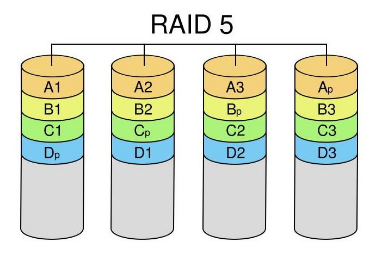

RAID 0提高存储性能的原理是把连续的数据分散到多个磁盘上存取，系统有数据请求就可以被多个磁盘并行的执行，每个磁盘执行属于它自己的那部分数据请求。这种数据上的并行操作可以充分利用总线的带宽，显著提高磁盘整体存取性能。从理论上讲，三块硬盘的并行操作使同一时间内磁盘读写速度提升了3倍。 但由于总线带宽等多种因素的影响，实际的提升速率肯定会低于理论值，但是，大量数据并行传输与串行传输比较，提速效果显著显然毋庸置疑。

raid6是raid5的升级，增加一块校验区
RAID 10是先做raid1，然后再做raid0。
数据读写用raid0方式,提升一倍的速度，数据备份方式raid1，提升数据安全性。
RAID10也被称为镜象阵列条带。象RAID0一样，数据跨磁盘抽取；象RAID1一样，每个磁盘都有一个镜象磁盘, 所以RAID 10的另一种会说法是 RAID 0+1。RAID10提供100%的数据冗余，支持更大的卷尺寸，但价格也相对较高。对大多数只要求具有冗余度而不必考虑价格的应用来说，RAID10提供最好的性能。使用RAID10，可以获得更好的可靠性，因为即使两个物理驱动器发生故障（每个阵列中一个），数据仍然可以得到保护。RAID10需要4 + 2*N 个磁盘驱动器（N >=0)， 而且只能使用其中一半(或更小, 如果磁盘大小不一)的磁盘用量, 例如 4 个 250G 的硬盘使用RAID10 阵列， 实际容量是 500G。
实现原理：
Raid10其实结构非常简单，首先创建2个独立的Raid1，然后将这两个独立的Raid1组成一个Raid0，当往这个逻辑Raid中写数据时，数据被有序的写入两个Raid1中。磁盘1和磁盘2组成一个Raid1，磁盘3和磁盘4又组成另外一个Raid1;这两个Raid1组成了一个新的Raid0。如写在硬盘1上的数据1、3、5、7，写在硬盘2中则为数据1、3、5、7，硬盘中的数据为0、2、4、6，硬盘4中的数据则为0、2、4、6，因此数据在这四个硬盘上组合成Raid10，且具有raid0和raid1两者的特性。
虽然Raid10方案造成了50%的磁盘浪费，但是它提供了200%的速度和单磁盘损坏的数据安全性，并且当同时损坏的磁盘不在同一Raid1中，就能保证数据安全性。假如磁盘中的某一块盘坏了，整个逻辑磁盘仍能正常工作的。
当我们需要恢复RAID10中损坏的磁盘时，只需要更换新的硬盘，按照RAID10的工作原理来进行数据恢复，恢复数据过程中系统仍能正常工作。原先的数据会同步恢复到更换的硬盘中。
总结：
磁盘空间利用率：50%。
读性能：N/2*单块硬盘的读性能
写性能：N/2*单块硬盘的写性能
冗余：只要一对镜像盘中有一块磁盘可以使用就没问题。